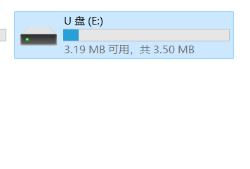
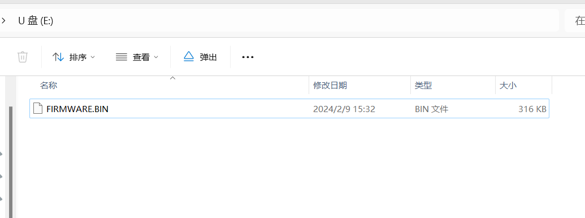
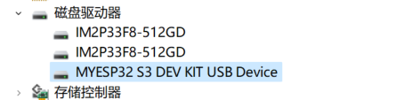

USB配置 需要支持USB功能的esp32芯片
ARDUINO_USB_MODE 设为1则是Hardware CDC and JTag,0则是USB-OTG。 board_build.extra_flags中修改。
ARDUINO_USB_CDC_ON_BOOT 比如合宙C3无USB转串口芯片的版本我们可以使用该选项，来使用Serial
[env:esp32c3]
platform = espressif32
board = airm2m_core_esp32c3
framework = arduino
upload_speed = 921600
monitor_filters =
direct
build_flags =
-D CORE_DEBUG_LEVEL=ARDUHAL_LOG_LEVEL_INFO
-D CONFIG_ARDUHAL_LOG_COLORS=1
-D ARDUINO_USB_CDC_ON_BOOT=1
一些情况下开启后，依然需要使用UART时，可以使用Serial0.print("Hello World!")而非 Serial.print("Hello World!")。 C3 使用HWCDC做为Serial。 S2使用的是另一个类USBCDC作为 Serial.
ARDUINO_USB_MSC_ON_BOOT USB Firmware MSC On Boot。类似U盘,可以读写文件，或者刷写固件。 依赖ARDUINO_USB_MODE为0,也就是需要OTG模式。 esp32-s3-devkitc-1的json里面设置为ARDUINO_USB_MODE=1, 我们使用board_build.extra_flags将其覆盖。
[env:esp32-s3-devkitc-1]
platform = espressif32
board = esp32-s3-devkitc-1
framework = arduino
monitor_speed = 115200
upload_speed = 921600
monitor_filters = direct
board_build.extra_flags =
-D ARDUINO_USB_MODE=0
build_flags =
-D CORE_DEBUG_LEVEL=ARDUHAL_LOG_LEVEL_INFO
-D CONFIG_ARDUHAL_LOG_COLORS=1
-D ARDUINO_USB_MSC_ON_BOOT=1
这里提供空的项目，并在loop中加delay以减少程序本身的性能消耗。
#include <Arduino.h>
void setup() {
}
void loop() {
delay(10000);
}
会出现新的磁盘
 内容如下:
 我们将固件拖入该U盘覆盖原有文件即完成更新固件。
相关配置 名称
默认值
最大字符数
描述
USB_FW_MSC_VENDOR_ID
"ESP32"
8
厂商ID
USB_FW_MSC_PRODUCT_ID
"Firmware MSC"
16
产品ID
USB_FW_MSC_PRODUCT_REVISION
"1.0"
4
产品版本
USB_FW_MSC_SERIAL_NUMBER
0x00000000
N/A
序列号
我们尝试修改厂商为"MYESP32"和产品ID为"S3 DEV KIT"总体配置如下:
[env:esp32-s3-devkitc-1]
platform = espressif32
board = esp32-s3-devkitc-1
framework = arduino
monitor_speed = 115200
upload_speed = 921600
monitor_filters = direct
board_build.extra_flags =
-D ARDUINO_USB_MODE=0
build_flags =
-D CORE_DEBUG_LEVEL=ARDUHAL_LOG_LEVEL_INFO
-D CONFIG_ARDUHAL_LOG_COLORS=1
-D ARDUINO_USB_MSC_ON_BOOT=1
-D USB_FW_MSC_VENDOR_ID="\"MYESP32\""
-D USB_FW_MSC_PRODUCT_ID="\"S3 DEV KIT\""
效果如下:
 ARDUINO_USB_DFU_ON_BOOT 启动时开启USB DFU（USB Device Firmware Upgrade)。 通过 USB 升级设备固件
[env:esp32-s3-devkitc-dfu]
platform = espressif32
board = esp32-s3-devkitc-1
framework = arduino
monitor_speed = 115200
upload_speed = 921600
monitor_filters = direct
board_build.extra_flags =
-D ARDUINO_USB_MODE=0
build_flags =
-D CORE_DEBUG_LEVEL=ARDUHAL_LOG_LEVEL_INFO
-D CONFIG_ARDUHAL_LOG_COLORS=1
-D ARDUINO_USB_DFU_ON_BOOT=1
Last modified: 20 四月 2024